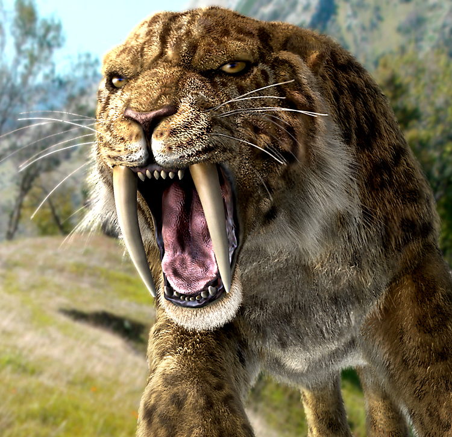
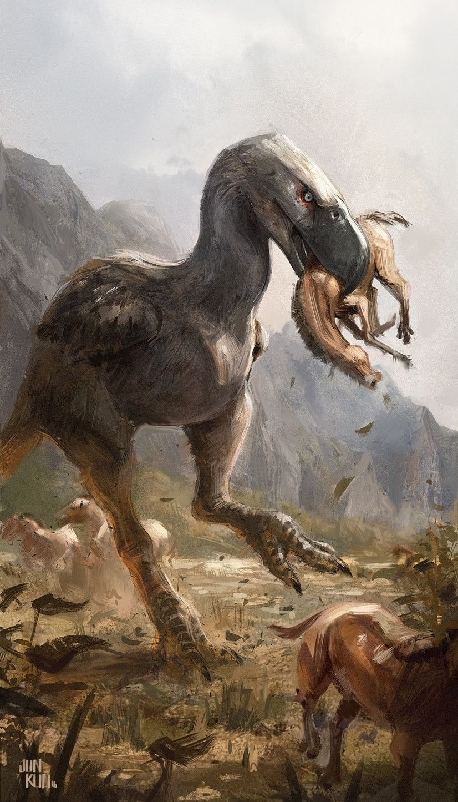

My name is Luke Christopher Hamer, aged 19.
Paleontology has always interested me ever since i read the first prehistoric book i ever had at aged 5; granted the book was mostly pictures it is what spareked my love for paleontology.
I was so interested in fact that i was able to pronounce some of the harder creature names by the age of 6-7.
I also had a really complex paleontology book that was around 100 pages long and went into detail about bone structure of some species and the habits we believed they had.
The main reason paleontology interests me is because the fossils have transcended time through an increadible natural process called fossilization.
fozzilization is the process that happens over millions of years; it starts when the creature dies and must have been buried by rock and sediment or any other condition that does not allow it to decompose. A
then over the millenia the bones are slowly replaced by minerals and leaves an imprint in the rock it was buried in, and what is left over is a fossil.
Plants have a slightly different process we burn through plant fossils all the time. coal for instance is the remains of plants compressed by the earths gravity and weight of the rock and sediment over megaannum( millions of years).
However there is a chance plants leave a fossil imprint before becoming fossil fuel.
Fossils form better in differnt conditions than others aswell tar is an increadible fossilization condition because decompositional bacteria find it hard to survive in tar pits.
The worst condition is any condition that allows fast composition, so mainly exposed in the open in a damp environment.
I have a few favourite eras, epochs i have researched the most and have the most interets in. for instance the carboniferous era really interests me because
its the time in earths histroy that was very high in oxygen levels. It was also the era of the insects and amphibians. spiders as big as medium dogs (Megarachne),
dragonflies almost half the size of an average human (Meganeura), millipedes 3.1 meters long (Arthropleura).
There are many more species but these three are the most known from this era. i also love the mesazoic epoch. which is the start and end of the dinosaurs.
1.The smilodon family; they were big cats that died out 10,000 years ago from the quaternary extinction that saw the death of megafauna across the world during the end of the pleistocene
er also known as the Ice-age. the smilodon were most well know for their size from 1-1.2 meters tall amd about 1-2.7 meters long and they had fangs that were 7 inches long. the most popular species is S.Popularis the largest of all 3 species. they were very
teritorial and and would hunt by stalking its prey then pouncing at high burst speeds like some modern wild cats. the reason i like this creature is because it is simply cool to me.
2.The Velociraptor; dispite what media may say about Velociraptors they wherea actual small relatively speaking, they where actually small for their genus. at the size of a turkey, they hunted in packs and had feathers on thier arms and tails for balance
and maneuverability and they hunted in packs which meant they were social predators. however they mostly scavanged because of their size it made hunting hard. however if they wanted to they had a single massive claw as one of their toes that they could use to
latch onto pray after leaping on it and keep biting into the creatures flesh. although they were primarily scavangers and theives of eggs. they were also very cunning and would outsmart their prey to win. the reason i like the velociraptor is because they are
cool and cunning.
3. The Terror Birds(Phorusrhacidae); These large Birds lived from 62 million years ago to 1.8 million years ago and they were just as terrifying. they could run at increadible speeds, had a height of 10-12ft, had strong legs for running and had big beaks that could tear flesh off some of the toughest
creatures living in that era. these large birds were like Ostrich's, they had wings but could not fly with them and where very small so not much use from them.
The reason i like these terror birds is because they are fast,agile and had an elegant hunting style that some would call cowardly but it was affective. because they would run in really fast cause some damage then retreat,
stalk their prey a litle while the wounds it gave weakened the creature then it would attack again; it would repeat this till it got the kill. they also may have scavanged when neccesary.